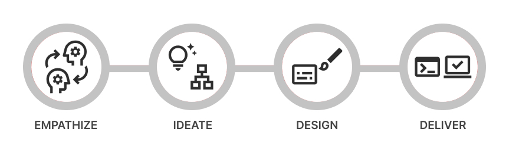
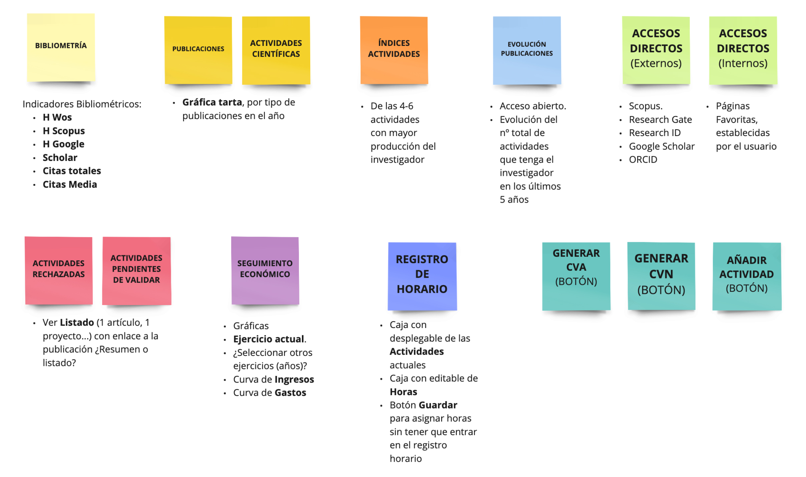
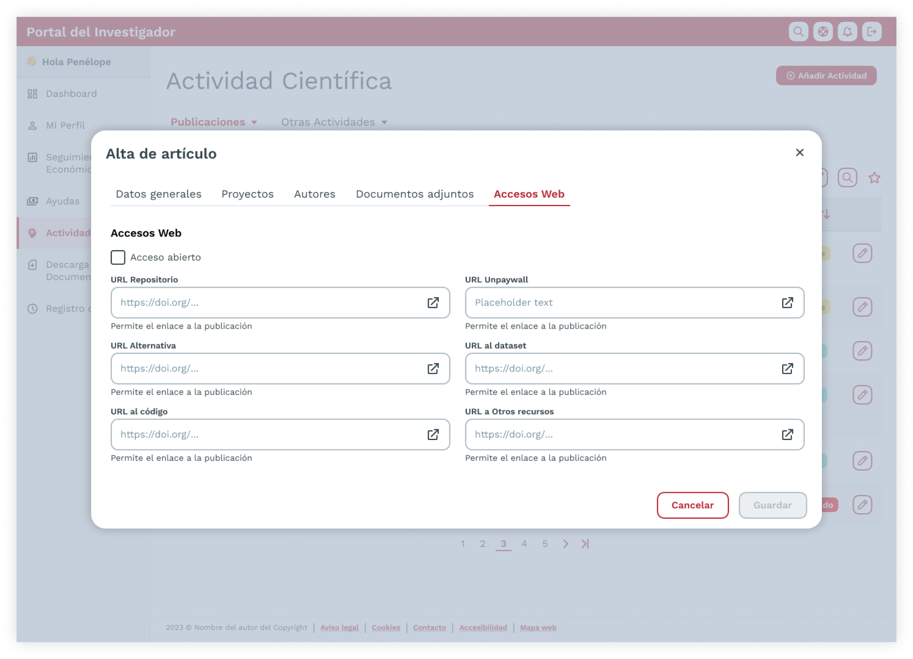
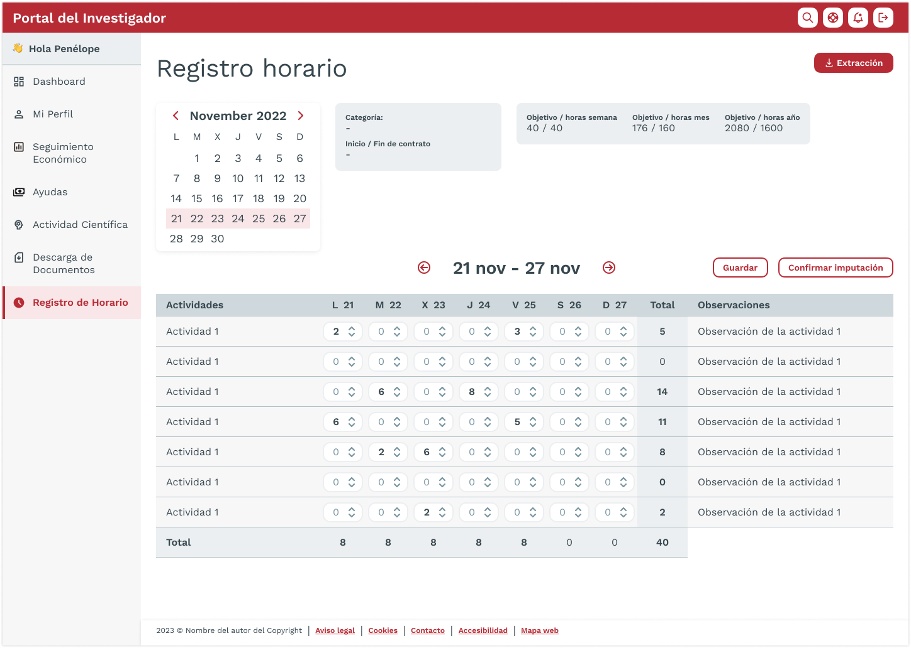
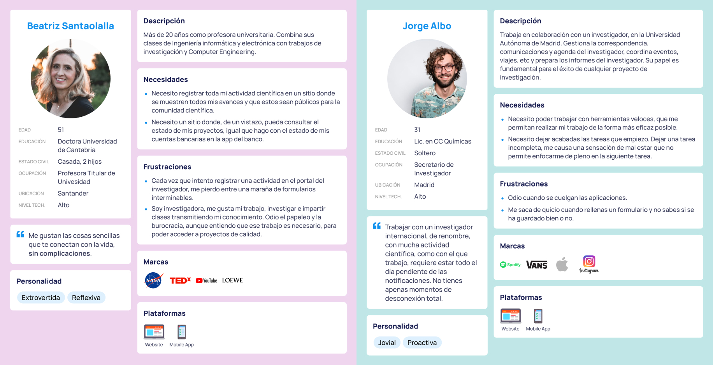

Researcher Portal

Researcher Portal
→ Description: Redesign of the financial and content management platform for university researchers.
→ Date: Dec 2022 - Apr 2023.
→ Role: Senior UX/UI Designer (Team of One).
→ Devices: Responsive web (desktop, tablet, mobile).
→ Methodology: Agile & Design Thinking.
→ Tools: Figma and Miro.
Context
In late 2022, a university organization commissioned us to redesign their Researcher Portal—a central hub where academics log and manage publications, fonds, patents, conferences, and funding.
The portal also serves as a community space for collaboration, but over the years its aesthetic became outdated and usability declined.
→ Old project registration page.

The Problem
The legacy portal suffered from poor usability, outdated UI, low responsiveness, and lack of multilingual and accessibility support.
Users—researchers and admin staff—struggled with overwhelming menus, lengthy forms (50+ fields!), and inefficient workflows, causing a drop in usage.
“Our goal was to create a portal that’s more intuitive and efficient, enabling researchers to find information faster and more easily.”
Solution Proposal
Our consultancy designed a UX-focused, creative UI overhaul, aligned with client needs and Agile + Design Thinking methodology. We maintained close collaboration with both business and users, delivering phased validations to minimize rework in development.
The Team
A cross-functional team—from our consultancy and the client—collaborated closely throughout the project.

Process
We utilized a “Discovery Design” approach—our in-house fusion of Design Thinking and Agile, structured into four phases: Empathize, Ideate, Design, Deliver.

1. Empathize
We conducted sessions with stakeholders and users to understand the portal, its technical constraints, user needs, and usage context.
Core challenges included:
- Outdated UI and non-responsive layout.
- Complex information architecture: up to 60+ menu items across top and sublevels.
- Cumbersome forms with 50+ fields.
- Lack of multilingual support.
- Accessibility below AA standard.
2. Ideate
We ideated with client and users, prioritizing ideas and sketching the portal’s new information architecture, navigation structure, and core templates.
Main design principles:
- Simplified navigation (top + side).
- Personalized dashboards for quick access to tasks.
- Responsive design with consistent tone and accessibility.
3. Design
Validated wireframes led to high-fidelity designs based on client branding and AA-level accessibility. We built a comprehensive UI Kit including colors, typographies, grids, spacing, shadows, buttons, forms, tables, modals, and notification systems.
We designed desktop, tablet, and mobile templates for consultation screens, detail views, forms (often in modals), notifications, time logs, and the responsive dashboard.
4. Deliver
Testing was iterative, using Figma prototypes to validate navigation clarity, usability, and minimize build-time fixes.
The new dashboard replaced the blank default screen, surfacing key metrics and tasks via cards and tabs, reducing cognitive load and improving user focus. It worked seamlessly across devices.
Results
The new portal launched successfully and received excellent user feedback:
- 28% increase in publications submitted.
- WCAG AA accessibility compliance.
- 43% decrease in support tickets.
- Higher engagement and repeat visits.
Key Learnings
- Designing for complexity requires simplicity: Even highly technical tools can be made usable with a focus on clarity, hierarchy, and progressive disclosure.
- Co-creation accelerates adoption: Early collaboration with stakeholders and users helped ensure the product met real needs and built ownership from day one.
- Accessibility must be intentional: Achieving WCAG AA standards required attention to color contrast, keyboard navigation, and semantic structure from the start.
- Small changes have big impact: Introducing a dashboard and reorganizing menus significantly improved engagement and orientation—without changing the backend logic.
- Design is never finished: Prototyping and continuous feedback loops helped us detect usability issues early, but also showed that user needs evolve over time.
Conclusion
In summary, the redesigned Researcher Portal improved usability, accessibility, and adoption—reinforcing its position as a key tool for academic teams.
Design Gallery
→ Dashboard content board.

→ Dashboard wireframe.

→ Dashboard (desktop version).

→ Dashboard (mobile version).

→ List scientific activity (publications).

→ Detail page of a registered publication.

→ Notifications page.

→ Modal form for registering a scientific publication (article).

→ Schedule Registration Page.

→ Personas (Researcher and Secretary).
